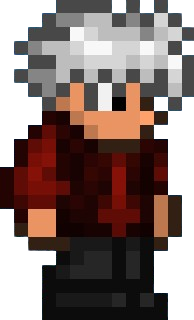

Utíkej, schovej se, přežij, uteč! Uvnitř živého labyrintu tě loví neznámý entity, zatímco se snaží odhalit pravdu a najít cestu ven dřív, než se bludiště znovu změní. Každý průchod je jiný. Každá chyba se trestá. Dokážeš uniknout… nebo si tě labyrint zapamatuje?
| Hráč | Skóre | Čas |
|---|---|---|
| ... | ... | ... |
| ... | ... | ... |
Mechanika: Krouží okolo hráče, poté zastaví a za pár sekund proletí směrem k hráči (hráč vidí, kudy proletí, aby měl šanci uhnout).
Lore: Yog-sothoth vytvořil tyto nekonečné chodby. Důvod je neznámý, možná chtěl vytvořit očistec...
Mechanika: Náhodně chodí v bludišti. Po spatření hráče vyběhne proti němu v rovině. Po nárazu do zdi bude na pár sekund omráčen.
Jednoho dne Dante seděl doma a věnoval se svým obvyklým, nudným činnostem svého obyčejného života. Pracoval jako účetní pro řetězec supermarketů a jak se dalo čekat – mít vysokoškolský diplom a skončit v supermarketu mu dělalo život mnohem, mnohem smutnějším, než si kdy představoval.
Jednoho dne se ale rozhodl vyrazit do lesa, aby tam trávil volný čas a věnoval se urbexu – svému koníčku, kterému se věnoval v mládí a ke kterému se teď vracel, aby znovu prožil staré časy. Zamířil do opuštěného hradu poblíž městečka, kde vyrůstal, než se odstěhoval. V batohu mu chrastilo staré vybavení z jeho mladších let a baterka mu svítila na cestu temným interiérem. V kuželu světla poletovaly prachové částice a jeho fantazie si s nimi pohrávala – připomínaly mu malé duchy.
Když Dante bloudil temnými chodbami hradu, zakopl a nějakým zvláštním způsobem propadl dřevěnou podlahou. Najednou se ocitl v bludišti – kamenné zdi, zatuchlý pach, který mu naplnil nos i plíce, ho na chvíli přiměl k nevolnosti, než si na něj zvykl. Zvedl baterku a její světlo odhalilo rozlehlost labyrintu. Nebylo kam jít a nebylo jasné, jak se dostat ven. Sebral odvahu a vydal se dál do chodeb.